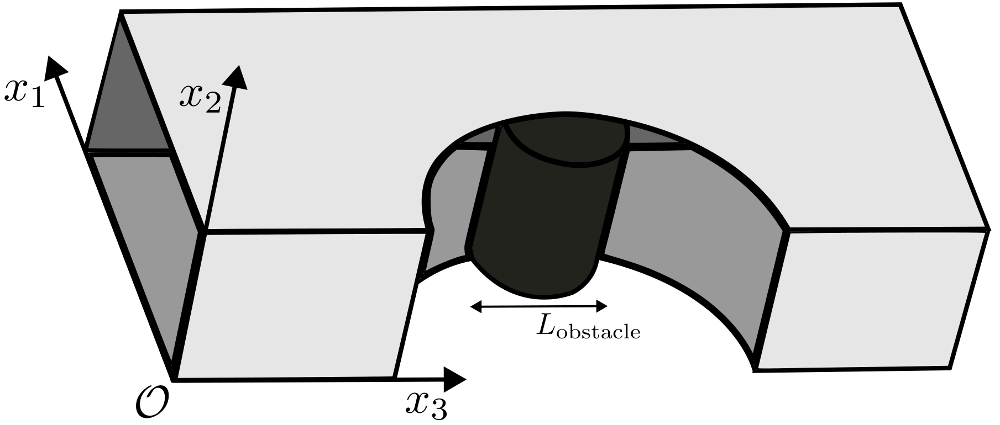
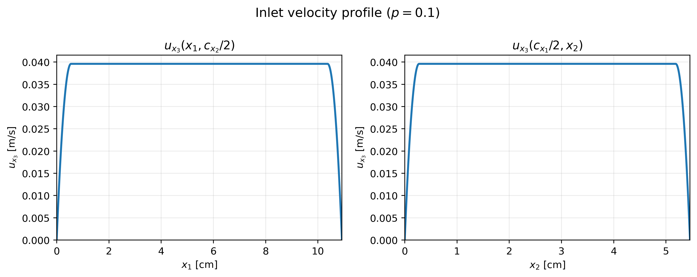
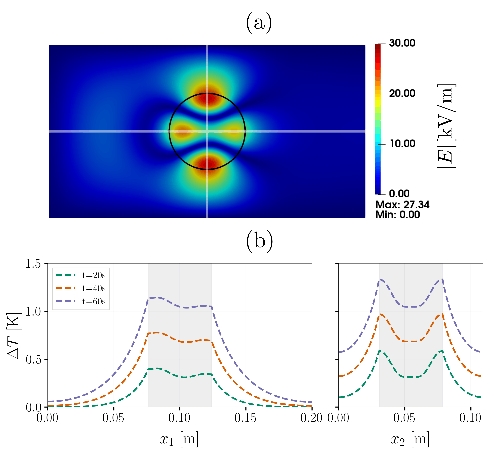
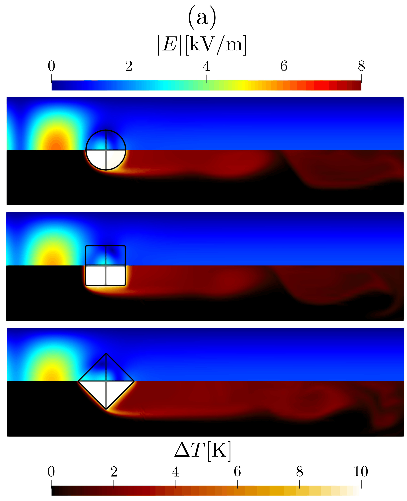

Microwave Heating#
This example couples the time-harmonic Maxwell solver with heat transfer to simulate the microwave heating of a dielectric cylinder sitting inside a rectangular waveguide. A first case reproduces, without any fluid flow, the resonance-driven heating of a low-loss ceramic cylinder studied by Peng et al. [1]. A second case builds on the first one and shows how a fluid flow can be added to the same setup to convectively cool the microwave-heated object.
Features#
Solver:
lethe-fluidorlethe-fluid-matrix-freeTransient problem
Coupling of the time-harmonic Maxwell solver with heat transfer through the
microwave heating = trueparameterExcitation of a rectangular waveguide through a
waveguide_portboundary condition and absorption of outgoing waves through a matchedimpedance_boundaryUse of the built-in
uniform_channel_with_meshed_cylindergrid, in which a solid cylinder is meshed and embedded in a rectangular channel
Files Used in This Example#
Both parameter files below are located in the example’s folder (examples/multiphysics/microwave-heating).
Parameter file, static heating of an alumina cylinder:
filled_waveguide_cylinder_Al.prmParameter file, heating of a silicon carbide cylinder cooled by an air flow:
filled_waveguide_cylinder_SiC.prm
Note
Additional parameter files for the square and tilted square obstacles are also provided to reproduce the results from the DPG article of Lethe [2], but they are not discussed in this example since they follow the same logic as the filled_waveguide_cylinder_SiC.prm case, only with a different obstacle geometry. See the Uniform Channel with Meshed Square Prism for details on this grid and its arguments.
Description of the Case#
Geometry#
Both cases share the same base geometry: a section of rectangular waveguide, with a cylindrical dielectric sample standing across its narrow dimension, meshed with the built-in uniform_channel_with_meshed_cylinder grid (see the Uniform Channel with Meshed Cylinder documentation for the full description of this grid and its arguments).


The waveguide’s cross-section is \(109.2\ \mathrm{mm}\times54.6\ \mathrm{mm}\) in both cases (a standard WR-430 rectangular waveguide), with the cylinder’s axis pointing in the \(x_2\)-direction. The cylinder itself is meshed (mesh_obstacle = true) so that the temperature field can be resolved inside it. In the case with fluid flow, the channel is longer to leave room for the wake to develop downstream of the cylinder before it reaches the outlet boundary condition. Note that because of how the uniform_channel_with_meshed_cylinder grid is built, the \(x_3\)-direction corresponds to the mesh’s x axis (the channel’s length), the \(x_1\)-direction to its y axis, and the \(x_2\)-direction to its z axis (the cylinder’s axis) in the parameter files. This choice of axes labeling is made to match the conventions of the waveguide literature, where the \(x_3\)-direction is the direction of propagation of the waveguide mode and the \(x_1\) is the first transverse direction, while the \(x_2\)-direction is the second transverse direction.
In
filled_waveguide_cylinder_Al.prm, the channel is \(200\ \mathrm{mm}\) long, and the cylinder has a radius of \(24\ \mathrm{mm}\), centered midway along the channel.In
filled_waveguide_cylinder_SiC.prm, the channel is \(400\ \mathrm{mm}\) long to leave room for the flow to develop, and the cylinder has a radius of \(20\ \mathrm{mm}\).
Physical Problem#
The amount of power absorbed by a dielectric cylinder placed in a waveguide strongly depends on its radius and permittivity: for specific combinations of these two parameters, the internal electromagnetic field can build up through constructive interference. The filled_waveguide_cylinder_Al.prm case reproduces this behavior for a low-loss alumina cylinder and is meant to be compared against the results of Peng et al. [1], who studied this exact resonance-driven heating mechanism, both theoretically (using Mie theory) and numerically, for low-loss cylindrical samples of alumina in a waveguide.
The first test case follows their numerical and experimental setup. Like what is described in the waveguide example, the time-harmonic Maxwell solver excites a single rectangular waveguide mode (here, the fundamental \(\mathrm{TE}_{10}\) mode) through a waveguide_port boundary condition, and absorbs the wave transmitted past the cylinder through a matched impedance_boundary condition, which mimics a semi-infinite waveguide by preventing spurious reflections back toward the cylinder.
Since set microwave heating = true is used in both cases, the power dissipated by the dielectric losses of the cylinder is automatically computed from the electromagnetic solution and added as a source term to the heat transfer equation,
see the multiphysics documentation for details. Since both materials considered here are non-magnetic and non-conductive (\(\mu_\mathrm{im}=\sigma=0\)), only the dielectric loss term, proportional to \(\varepsilon_\mathrm{im}|\mathbf{E}|^2\), contributes to the heating.
Tip
Because none of the physical properties used in this example depend on temperature, the electromagnetic fields do not need to be recomputed as the cylinder heats up. Both parameter files therefore rely on (or default to) subsection time coupling strategy with set type = none: the electromagnetic problem is solved once, before the first time step, and the resulting heat source is then reused throughout the transient heat transfer solve. See the Time-Harmonic Maxwell documentation for the other available coupling strategies, needed when the physical properties depend on the temperature.
The heat transfer equation is then solved in time for 60 seconds, with the whole domain initially at a uniform reference temperature of 39.6 °C to match the experimental conditions of Peng et al. [1]. However, without loss of generality, we use a rescaled temperature of 0 in the parameter files while keeping the physical properties the ones used in the experimental setup, since only the resulting change in temperature, \(\Delta T\), is examined in the post-processing. In the first case, the cylinder is surrounded by stagnant air that is not allowed to flow (fluid dynamics = false), so it can only lose heat by conduction through the surrounding air until reaching the walls of the waveguide, all of which are assumed to be insulated (noflux).
In the second case, we build on the first case and introduce a laminar air flow along the channel with an imposed inlet temperature of 0 °C, which is also the initial temperature of the domain; the noflux boundary condition is kept on the channel walls and on the outlet. Additionally, the cylinder is now made of silicon carbide (SiC), a much lossier ceramic than the alumina used in the first case, meaning that it will absorb more electromagnetic power because of its higher loss tangent, and heat up in a more noticeable way. For the fluid problem, the air flow is bounded by no-slip conditions at the walls of the waveguide, has an imposed velocity profile at the inlet, and a do-nothing boundary condition at the outlet. The inlet velocity profile is built using a separable two-dimensional smoothed top-hat profile: the velocity is constant in the central region of the inlet cross-section and decreases quadratically to zero over a layer extending over a prescribed percentage of the channel width and height adjacent to each wall. The resulting profile therefore provides a uniform core while ensuring a smooth transition to the no-slip condition at the walls, and is scaled according to the specified Reynolds number (here, \(\mathrm{Re} = 400\)). Mathematically, the condition is defined as:
with,
with \(c_{x_1}\) and \(c_{x_2}\) the channel width and height, respectively, \(p\) the fraction of each dimension over which the velocity is smoothed quadratically to zero, and where both \(f_{x_1}\) and \(f_{x_2}\) are given by the following piecewise function:
The parameter \(\alpha\) in the above equations is a scaling factor introduced so that the Reynolds number, defined here as \(\mathrm{Re} = \dfrac{u_\mathrm{avg}L_\mathrm{obstacle}}{\nu}\), can be specified directly; the average velocity \(u_\mathrm{avg}\) is then recomputed from the volumetric flow rate each time one wants to change the velocity without altering the shape of the inlet profile. The parameters used in the filled_waveguide_cylinder_SiC.prm case are:
It gives the following velocity profiles at the inlet:


Parameter Files#
Case 1: Static Heating of an Alumina Cylinder#
This case (filled_waveguide_cylinder_Al.prm) solves the coupled electromagnetics/heat transfer problem without any fluid flow.
Simulation Control#
subsection simulation control
set method = bdf1
set time step = 0.05
set time end = 60
set output time frequency = 0.05
set output path = ./cylinder_resonance/
set subdivision = 3
end
The heat transfer equation is integrated in time with a first-order backward difference scheme (bdf1) up to \(t=60\ \mathrm{s}\). Since fluid dynamics = false (see below), no velocity field is solved for, so the CFL condition is trivially satisfied at every time step (CFL \(= v\Delta t / \Delta x = 0\)). The diffusion time step restriction (\(\alpha \Delta t/\Delta x^2 \approx 0.16 \leq 1/6\)) is also satisfied for the chosen mesh and physical properties for a time step value set value of \(0.05\ \mathrm{s}\). This does not need to be adapted in time since the mesh and the physical properties are constant. Additionally, the output time frequency is set to match the time step, so that the solution is saved at every time step.
Note
The subdivision parameter subdivides each cell into smaller sub-cells for visualization purposes. Since higher-order polynomials are used here, but Paraview only interpolates linearly between the vertices of each cell, this subdivision is necessary to produce a smooth-looking visualization of the solution.
Multiphysics#
subsection multiphysics
set fluid dynamics = false
set microwave heating = true
set electromagnetics = true
set heat transfer = true
end
The fluid dynamics solver is disabled: only the electromagnetics and heat transfer physics are solved, coupled through the microwave heating source term described above.
Mesh#
subsection mesh
set type = lethe
set grid type = uniform_channel_with_meshed_cylinder
set grid arguments = 0., 0. : 0.2, 0.1092 : 0.1, 0.0546 : 0.024 : 0.04 : 1 : 1 : 2 : 2 : 0.0546 : 2 : false : true : true
set initial refinement = 2
end
This builds a channel of length \(200\ \mathrm{mm}\) along the mesh’s x axis, with a \(109.2\ \mathrm{mm} \times 54.6\ \mathrm{mm}\) cross-section spanning its y and z axes respectively, and a meshed cylinder of radius \(24\ \mathrm{mm}\) (mesh_obstacle = true) extruded along z, centered at mid-length and mid-height of the channel, with colorized (colorize = true) boundaries.
No adaptive mesh refinement is used in this example. A mesh-convergence analysis and an optimization of the refinement region were performed beforehand, to ensure that the mesh is sufficiently refined to accurately capture the electromagnetic, velocity, and temperature fields without requiring an excessive number of degrees of freedom (which are otherwise hard to keep bounded when performing mesh adaptation in a multiphysics problem, especially when the different physics have different mesh-refinement requirements).
Time Harmonic Maxwell#
subsection time harmonic maxwell
set electromagnetic frequency = 2.45e9
set number of waveguide inlets = 1
set electromagnetic scaling type = power
subsection waveguide inlet 0
set port boundary id = 0
set waveguide power = 50
set corner 0 = 0,0,0
set corner 1 = 0.,10.92,0
set corner 2 = 0., 0., 5.46
set corner 3 = 0., 10.92, 5.46
subsection waveguide mode
set mode type = TE
set mode order m = 1
set mode order n = 0
end
end
end
The waveguide is excited at the standard industrial microwave frequency of \(2.45\ \mathrm{GHz}\) with a \(\mathrm{TE}_{10}\) mode (\(m=1\), \(n=0\)), fed through boundary id 0 (the left face of the channel) at a power of \(50\ \mathrm{W}\). Since electromagnetic scaling type = power is used, the solution is rescaled after solving so that the power flowing through this inlet matches this value (see the Time-Harmonic Maxwell documentation for details).
Boundary Conditions#
subsection boundary conditions time harmonic maxwell
set number = 3
subsection bc 0
set id = 2, 3, 4, 5
set type = pec
end
subsection bc 1
set id = 0
set type = waveguide_port
end
subsection bc 2
set id = 1
set type = impedance boundary
subsection excitation x real part
set Function expression = 0
end
subsection excitation x imag part
set Function expression = 0
end
subsection excitation y real part
set Function expression = 0
end
subsection excitation y imag part
set Function expression = 0
end
subsection excitation z real part
set Function expression = 0
end
subsection excitation z imag part
set Function expression = 0
end
subsection surface admittance real part
set Function expression = 0.828306014816808
end
subsection surface admittance imag part
set Function expression = 0.
end
end
end
bc 0(ids2to5, the four channel walls) is apecboundary.bc 1(id0, the left face) is thewaveguide_portused to excite the \(\mathrm{TE}_{10}\) mode.bc 2(id1, the right face) is animpedance_boundarywhose surface admittance is matched to the \(\mathrm{TE}_{10}\) wave admittance of the empty guide, with no additional excitation, so that the wave transmitted past the cylinder is absorbed rather than reflected back.
subsection boundary conditions heat transfer
set number = 1
subsection bc 0
set id = 0, 1, 2, 3, 4, 5
set type = noflux
end
end
Every wall of the channel is insulated (noflux) in this first case.
Attention
As in the waveguide and Fichera oven examples, the subsection boundary conditions for the fluid dynamics boundaries cannot be removed from the parameter file, even though the fluid solver is disabled:
subsection boundary conditions
set number = 1
subsection bc 0
set id = 0, 1, 2, 3, 4, 5
set type = noslip
end
end
FEM#
subsection FEM
set temperature degree = 3
set electromagnetics trial degree = 2
set electromagnetics test degree = 3
end
The choice of polynomial degrees for the finite element spaces is based on the spatial-convergence analysis and the optimization of the refinement region described above.
Tip
The finite elements used to solve the time-harmonic Maxwell equations are first-kind Nédélec elements, which have substantially more degrees of freedom per cell than the elements used for the heat-transfer problem (or the fluid-dynamics problem, when enabled). As a result, using the same polynomial degree for all physics can make the electromagnetic problem disproportionately expensive. We therefore use a lower polynomial degree for the electromagnetic trial space to limit its computational cost.
On the other hand, higher-order shape functions generally provide greater accuracy for a given number of degrees of freedom for the time-harmonic Maxwell problem. The choice of polynomial degree therefore involves a trade-off between the efficiency of the electromagnetic discretization and its accuracy. Achieving an efficient balance also requires an appropriately refined mesh, so that computational resources are not spent on unnecessary cells.
Physical Properties#
subsection physical properties
set number of fluids = 1
set number of solids = 1
subsection fluid 0
set electric conductivity model = constant
set electric conductivity = 0.
set electric permittivity model = constant
set electric permittivity real part = 1.
set electric permittivity imag part = 0.
set magnetic permeability model = constant
set magnetic permeability real part = 1.
set magnetic permeability imag part = 0.
set kinematic viscosity = 1.48e-5
set specific heat = 1006
set density = 1.225
set thermal conductivity = 2.6e-2
end
subsection solid 0
set electric conductivity model = constant
set electric conductivity = 0.
set electric permittivity model = constant
set electric permittivity real part = 9.2
set electric permittivity imag part = 0.005
set magnetic permeability model = constant
set magnetic permeability real part = 1.
set magnetic permeability imag part = 0.
set thermal conductivity = 26
set specific heat = 1046
set density = 3750
end
end
The waveguide is filled with air (fluid 0), whose material properties have been taken to be approximately those of the International Standard Atmosphere. The cylinder (solid 0) is alumina (\(\mathrm{Al_2O_3}\)), a low-loss ceramic with a relative permittivity of \(\varepsilon_r \approx 9.2 - 0.005i\); all its properties have been taken from Peng et al. [1].
Non-Linear and Linear Solver Control#
subsection non-linear solver
subsection fluid dynamics
set verbosity = quiet
end
subsection heat transfer
set verbosity = verbose
set tolerance = 1e-4
set max iterations = 10
end
end
subsection linear solver
subsection electromagnetics
set verbosity = verbose
set relative residual = 1e-4
set minimum residual = 1e-8
set preconditioner = none
end
subsection heat transfer
set max iters = 1000
set relative residual = 1e-3
set minimum residual = 1e-6
set max krylov vectors = 1000
end
end
Lethe always solves the heat transfer problem in a non-linear fashion using Newton’s method, even though the physical properties are constant in this case. The linear system arising from heat transfer is solved with a GMRES iterative solver, while the time-harmonic Maxwell problem is solved with a Conjugate Gradient iterative solver. The preconditioner for the heat-transfer problem is the default ILU preconditioner, while the time-harmonic Maxwell problem is solved without any preconditioner.
Case 2: Adding Fluid Flow#
This second case (filled_waveguide_cylinder_SiC.prm) starts from the same base setup and adds an air flow along the channel, so that the cylinder is now convectively cooled while being heated by the electromagnetic field. Only the parameters that differ from, or are added to, Case 1 are detailed below.
Simulation Control#
subsection simulation control
set method = bdf1
set time step = 0.00005
set adapt time step to respect CFL = true
set adaptative time step scaling = 1.005
set output control = time
set time end = 60
set output time frequency = 0.05
set output path = ./output_cylinder/
set subdivision = 3
set max cfl = 1
end
Because a fluid flow is now present, the time step is adapted at every iteration to respect the CFL condition, with a maximum CFL number of 1. The initial time step is set to \(5\times10^{-5}\ \mathrm{s}\) and is increased by a factor of \(1.005\) at each time step until the CFL condition is violated, at which point the time step is reduced to satisfy it again.
Multiphysics#
subsection multiphysics
set fluid dynamics = true
set microwave heating = true
set electromagnetics = true
set heat transfer = true
end
The only difference with Case 1 is set fluid dynamics = true: the incompressible Navier-Stokes equations are now solved, in addition to electromagnetics and heat transfer.
Mesh and Box Refinement#
subsection mesh
set type = lethe
set grid type = uniform_channel_with_meshed_cylinder
set grid arguments = 0., 0. : 40, 10.92 : 10, 5.56 : 2 : 4 : 1 : 1 : 2 : 8 : 5.46 : 3 : false : true : true
set initial refinement = 2
set initial boundary refinement = 1
set boundaries refined = 2,3,4,5
end
subsection box refinement
set number of refinement boxes = 1
subsection box 0
subsection mesh
set type = dealii
set grid type = cylinder_shell
set grid arguments = 5.46: 2: 2.3: 20:20:false
set initial translation = 10, 5.56, 0
end
set additional refinement = 2
end
end
The channel is now \(400\ \mathrm{mm}\) long, and the cylinder radius is reduced to \(20\ \mathrm{mm}\) so that it no longer corresponds to a resonant condition of the waveguide-cylinder system (see the physical problem section). The cylinder is also placed close to the inlet, \(100\ \mathrm{mm}\) from the left face, leaving \(300\ \mathrm{mm}\) of channel downstream for the wake to develop before the flow reaches the outlet. All lengths are given in centimeters here rather than meters (see the dimensionality subsection below), and the four channel walls (ids 2 to 5) receive one extra level of boundary refinement to better resolve the developing boundary layers.
A box refinement region, a thin cylindrical shell wrapped around the physical cylinder, is also added, providing two additional levels of refinement in the vicinity of the object to better resolve both the thermal and momentum boundary layers there. See the Box Refinement documentation for details.
Initial Conditions#
subsection initial conditions
set type = nodal
subsection uvwp
set Function constants = c_width = 10.92, c_height = 5.46, Re = 400, scaling = 1.782122724170977, percent = 0.1
set Function expression = Re*scaling*abs((if(y < percent*c_width/2, y*(y-percent*c_width), if(y < c_width-(percent*c_width/2), (percent*c_width * percent*c_width)/4 , (y-c_width)*(y-c_width+ percent*c_width)))) * (if(z < percent*c_height/2, z*(z-percent*c_height), if(z < c_height-(percent*c_height/2), (percent*c_height * percent*c_height)/4, (z-c_height)*(z-c_height+percent*c_height)))));0;0;0
end
subsection temperature
set Function expression = 0
end
end
The velocity field is initialized with an approximate fully-developed laminar profile for a rectangular duct, scaled to reach a Reynolds number of \(400\) based on the channel’s transverse dimensions, and rounded off near the walls (over the outer 10% of each transverse dimension, percent = 0.1) to avoid an unphysical discontinuity in the wall-normal velocity gradient at the channel edges. The same expression is reused verbatim as the inlet boundary condition below. Note that this velocity profile does not account for the presence of the cylinder, and results in oscillations in the flow field as the simulation starts; these are quickly damped by viscous effects over the first few time steps. This profile is chosen because it is the simplest one that satisfies the boundary conditions imposed at the inlet and on the walls.
The temperature field is initialized at \(0\).
Boundary Conditions#
subsection boundary conditions
set number = 3
subsection bc 0
set id = 2, 3, 4, 5
set type = noslip
end
subsection bc 1
set id = 0
set type = function
subsection u
set Function constants = c_width = 10.92, c_height = 5.46, Re = 400, scaling = 1.782122724170977, percent = 0.1
set Function expression = Re*scaling*abs((if(y < percent*c_width/2, y*(y-percent*c_width), if(y < c_width-(percent*c_width/2), (percent*c_width * percent*c_width)/4 , (y-c_width)*(y-c_width+ percent*c_width)))) * (if(z < percent*c_height/2, z*(z-percent*c_height), if(z < c_height-(percent*c_height/2), (percent*c_height * percent*c_height)/4, (z-c_height)*(z-c_height+percent*c_height)))))
end
subsection v
set Function expression = 0
end
subsection w
set Function expression = 0
end
end
subsection bc 2
set id = 1
set type = outlet
end
end
subsection boundary conditions heat transfer
set number = 2
subsection bc 0
set id = 1, 2, 3, 4, 5
set type = noflux
end
subsection bc 1
set id = 0
set type = temperature
subsection value
set Function expression = 0
end
end
end
The left face (id 0) is now a velocity inlet, driven by the profile described in the physical problem section, while the right face (id 1) is an outlet. The incoming air is also imposed at a fixed temperature of \(0\) on that same inlet face, while every other wall remains adiabatic (noflux); note that the electromagnetic boundary conditions (not repeated here) are unchanged from Case 1.
Physical Properties#
subsection physical properties
set number of fluids = 1
set number of solids = 1
subsection fluid 0
# ... identical to Case 1 (air) ...
end
subsection solid 0
set electric conductivity model = constant
set electric conductivity = 0.
set electric permittivity model = constant
set electric permittivity real part = 9.72
set electric permittivity imag part = 2.01
set magnetic permeability model = constant
set magnetic permeability real part = 1.
set magnetic permeability imag part = 0.
set thermal conductivity = 120.92
set specific heat = 676.63
set density = 3210
end
end
The cylinder is now silicon carbide (SiC), a much lossier ceramic than the alumina used in Case 1 (\(\varepsilon_r \approx 9.72 - 2.01i\)), whose properties have been taken from the CRC Materials Science and Engineering Handbook [3].
Dimensionality#
subsection dimensionality
set length = 0.01
set mass = 1
set time = 1
set temperature = 1
set electric current = 0.01
end
For this second case, the length unit is set to \(0.01\ \mathrm{m}\) (1 cm) rather than \(1\ \mathrm{m}\) as in Case 1. This is because, when using the matrix-free solver for the Navier-Stokes equations, the geometric multigrid preconditioner works better when the quantities involved are of order 1. With our geometry and a Reynolds number of 400, the average velocity is \(\approx 14.8\ \mathrm{cm/s}\), so the unit length is set to 1 cm to keep the velocity closer to order 1. The electric current unit is also set to \(0.01\ \mathrm{A}\) so that the electromagnetic electric field outputted becomse equivalent to \(\mathrm{V/m}\), since \(\mathrm{V/m} \propto \mathrm{m}/\mathrm{A}\).
Linear Solver Control#
subsection linear solver
subsection fluid dynamics
set method = gmres
set max iters = 1000
set relative residual = 1e-4
set minimum residual = 1e-8
set preconditioner = gcmg
set verbosity = verbose
set max krylov vectors = 500
# MG parameters
set mg verbosity = quiet
set mg enable hessians in jacobian = false
set mg coarsening type = ph
set mg p coarsening type = decrease_by_one
# Smoother
set mg smoother iterations = 3
set mg smoother eig estimation = true
set mg smoother preconditioner type = inverse_diagonal
# Eigenvalue estimation parameters
set eig estimation smoothing range = 20
set eig estimation cg n iterations = 20
set eig estimation verbosity = quiet
# Coarse-grid solver
set mg coarse grid solver = direct
end
subsection heat transfer
set max iters = 1000
set relative residual = 1e-4
set minimum residual = 1e-8
set max krylov vectors = 1000
end
subsection electromagnetics
set verbosity = verbose
set relative residual = 1e-4
set minimum residual = 1e-8
set preconditioner = none
end
end
The fluid dynamics equations are solved with the matrix-free solver, preconditioned by a global coarsening multigrid (gcmg) method. Refer to the Linear Solver documentation for more details on the multigrid parameters. The other linear solver parameters are identical to those of Case 1.
Restart#
subsection restart
set checkpoint = true
set frequency = 200
set filename = restart
set restart = false
end
Since this second case is significantly more expensive than Case 1, the simulation has been run on the clusters of the Digital Research Alliance of Canada. Consequently, checkpointing is enabled so that the simulation can be resumed if it needs to be interrupted or does not finish in the requested time. See the Restart documentation for details.
Running the Simulations#
Warning
Both cases are too expensive in memory to be run on a desktop computer, except for very coarse meshes (for which the simulation results would not be mesh independent). The first case has been run on a single node with 128 cores and 1 TB of RAM, while the second case has been run on 8 nodes totaling 192 cores and 749 GB of RAM each. The second case is also significantly more expensive in CPU time than the first, due to the added cost of solving the fluid dynamics equations at every time step; it takes approximatively a day to run.
Results and Discussion#
The first figure reproduces the results of Peng et al. [1] for the alumina cylinder, showing the electromagnetic field amplitude solution in the \(x_1x_2\)-plane at mid height (note that their results are not shown here). Additionally, it shows the temperature field evolution at two crossing lines (\(x_1=0.0546\) and \(x_2=0.0273\) m, denoted by the white stripes):


Because the cylinder’s radius and permittivity, place it near a resonant condition of the waveguide-cylinder system, the internal electric field, and therefore the heating rate, are strongly enhanced. The overall field distribution pattern is in agreement with the resonance-driven heating mechanism described by Peng et al. [1]. When comparing amplitudes, the electric field in our solution is lower than what they report, which is caused by a difference in the definition of the input power in the waveguide. To recover the same amplitude, one would need to scale the solution field by a factor of \(\sqrt{P_\mathrm{inlet}/P_\mathrm{total}} \approx 1.51\), where \(P_\mathrm{inlet}\) is the power flowing through the waveguide inlet (the waveguide power parameter) and \(P_\mathrm{total}\) is the total power passing through the waveguide, accounting for the reflected component of the electromagnetic wave (this needs to be computed numerically by integrating the Poynting vector over the waveguide cross-section).
The second figure shows a summary of the second test case, showing the corresponding temperature field and electric field amplitude after 60 seconds of simulation for different obstacle geometries. Unlike Case 1, the air flow continuously removes heat from the cylinder by forced convection, which skews the temperature field toward the downstream side of the cylinder. By looking at the figure, one can see that the different geometries lead to different heating patterns and rates from the electric field intensity distribution. This shows that microwave heating depends not only on the type of material, but also on the geometry and its orientation with respect to the electromagnetic field.


On a final note, we present an animation of the transient heating and flow fields for the SiC cylinder case, showing the evolution of the temperature field and the velocity field in the \(x_1x_2\)-plane at mid height:
Possibilities for Extension#
Temperature-dependent properties: Replace the
constantelectric permittivity and conductivity models by temperature-dependent ones, and switch thetime coupling strategyfromnonetoiterationorthresholdso that the electromagnetic field is periodically recomputed as the material heats up and its properties drift.Increase the flow rate: Increase the Reynolds number
Reused in the initial and boundary conditions of Case 2 to study how stronger convective cooling affects the peak temperature reached by the cylinder.